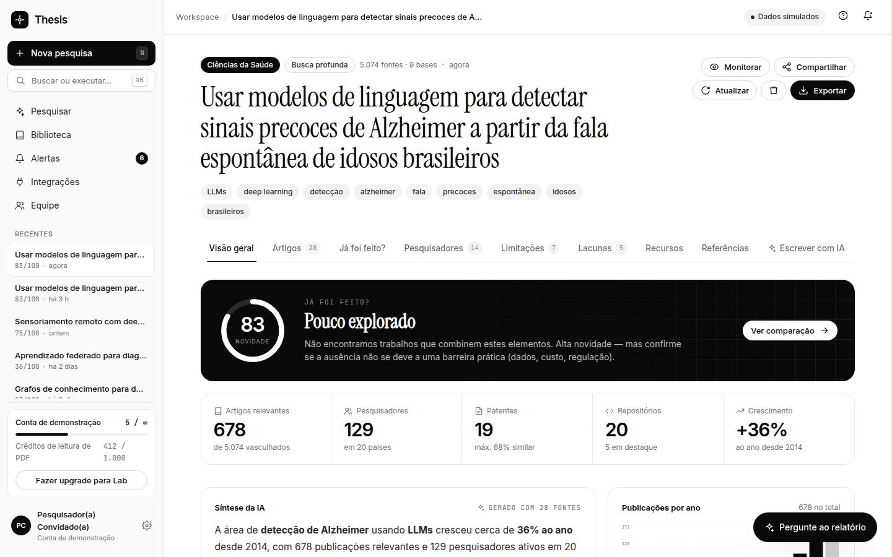
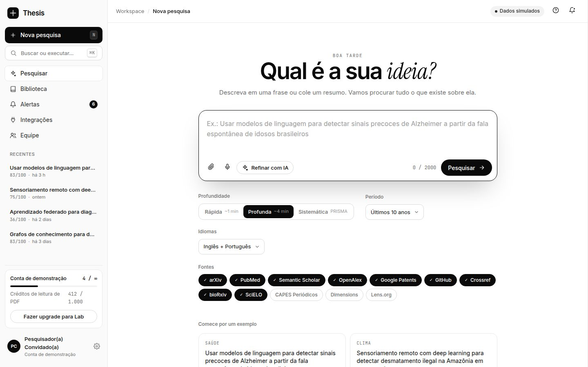
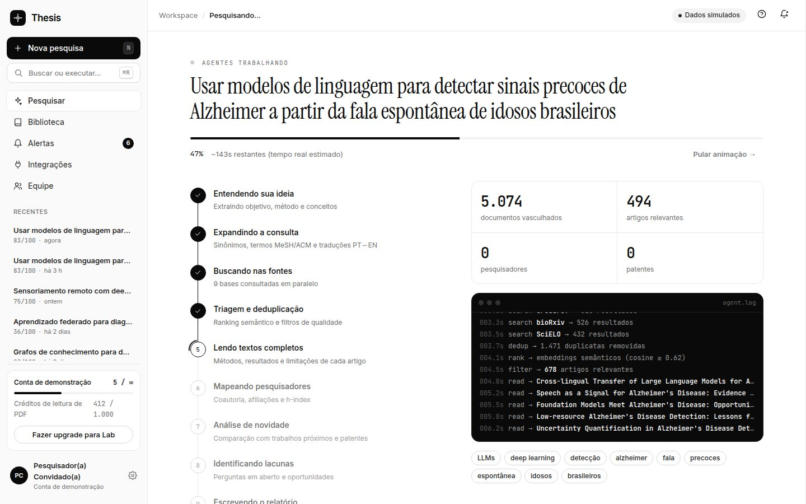
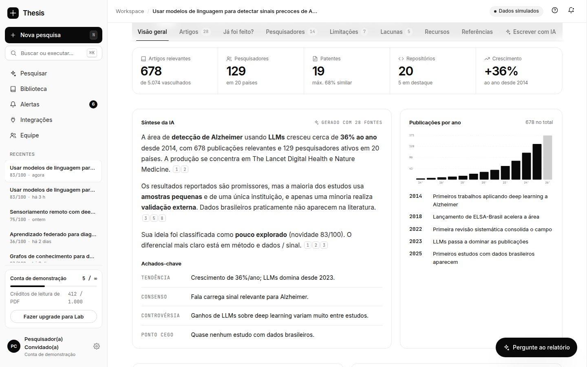
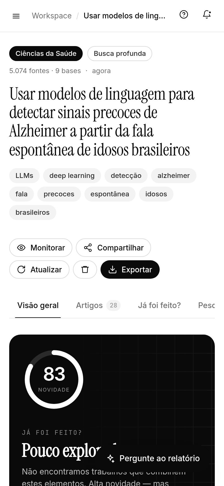

Revisão leva semanas
Buscar em várias bases, ler resumos, deduplicar e organizar referências consome semanas — muitas vezes meses — antes de qualquer decisão.
A Thesis é uma plataforma de IA para pesquisadores. Você descreve uma ideia de pesquisa e recebe um relatório com o que já foi feito, quem trabalha no tema, as limitações da área e onde está a sua lacuna.

O problema
Antes de escrever a primeira linha de um projeto, um pesquisador precisa entender o estado da arte. Hoje isso é um trabalho manual, espalhado em dezenas de bases e ferramentas.
Buscar em várias bases, ler resumos, deduplicar e organizar referências consome semanas — muitas vezes meses — antes de qualquer decisão.
É comum descobrir tarde demais que um grupo em outro país já publicou algo muito parecido — depois do projeto ou do edital submetido.
Mapear pesquisadores, laboratórios e possíveis colaboradores exige garimpar coautorias e afiliações à mão.
A literatura é majoritariamente em inglês e as ferramentas não pensam em editais brasileiros, ABNT ou dados nacionais.
Ao escolher um tema de tese, antes de submeter um edital, ao preparar a revisão de literatura ou ao procurar colaboradores.
A solução
Telas reais da plataforma funcionando. Clique em cada seção para ver — e na imagem para ampliar.
Score de novidade de 0 a 100, indicadores da área e uma síntese da IA com citações numeradas e clicáveis.
Como funciona
Em português, numa frase ou num resumo. Dá para refinar com IA (pergunta de pesquisa, hipótese, recorte PICO), ditar ou anexar um rascunho.

A ideia vira conceitos e consultas; as fontes são buscadas, deduplicadas, ranqueadas e lidas. Você acompanha cada etapa ao vivo.

Navegue pelas seções, salve artigos, monitore o tema com alertas e exporte para PDF, BibTeX, Markdown ou CSV.

Diferenciais
Não é só uma lista de artigos: a Thesis compara a sua ideia com os trabalhos mais próximos e diz onde está a diferença.
Interface e textos em português, ABNT, editais FAPESP/CNPq/Serrapilheira, bases como DATASUS e MapBiomas, e destaque para lacunas com dados nacionais.
A síntese, o chat e os textos gerados usam citações numeradas que levam direto ao artigo de origem.
Revisão de literatura, justificativa para edital e e-mail para colaborador saem prontos para editar.
Monitore uma ideia e receba alertas quando surgir algo parecido — antes de você investir meses nela.
Cada relatório pertence à sua conta; ideias não são compartilhadas nem usadas para treinar modelos.
Tecnologia
Tudo roda em Docker Compose: banco, API e frontend.
Guia completo, comandos e solução de problemas no README do repositório.
Estado atual · transparência
O produto está completo de ponta a ponta. Nesta versão, o conteúdo bibliográfico é gerado por um motor próprio que simula as fontes, para validar a experiência antes de conectar as bases reais.
O formato do relatório já é o definitivo: trocar o motor por buscas reais não exige mudar o frontend.
Roadmap
Modelo de negócio · proposta
Para conhecer a plataforma.
Para mestrandos, doutorandos e pós-docs.
Para grupos de pesquisa.
Responsivo
Todo o workspace se adapta a telas pequenas — dá para consultar um relatório no corredor do congresso.
